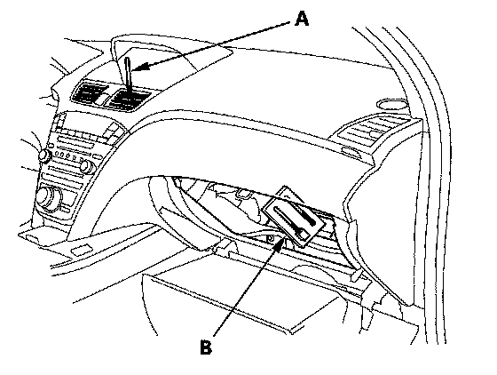
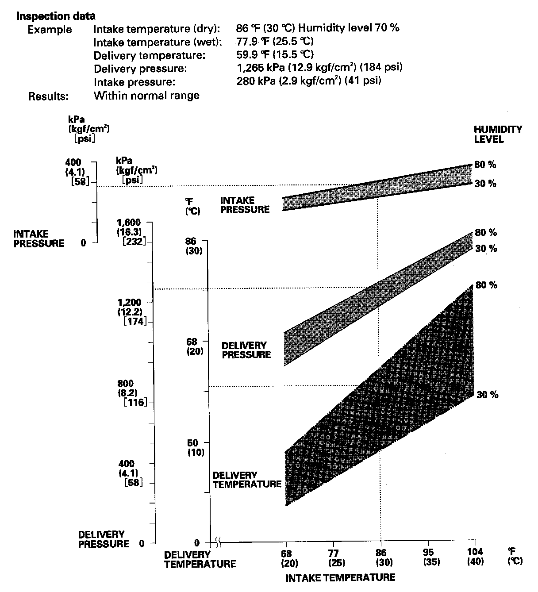
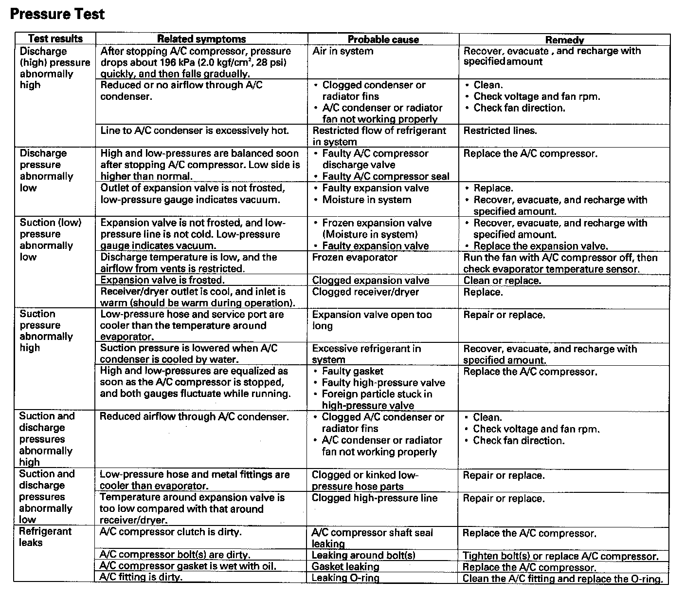

A/C System Test
A/C System TestPerformance Test
CAUTION:
- Air conditioning refrigerant or lubricant vapor can irritate your eyes, nose, or throat.
- Be careful when connecting service equipment.
- Do not breathe refrigerant or vapor.
The performance test will help determine if the A/C system is operating within specifications.
NOTE:
- If accidental system discharge occurs, ventilate the work area before resuming service.
- Additional health and safety information may be obtained from the refrigerant and lubricant manufacturers.
1. Connect an R-134a refrigerant recovery/recycling/charging station to the high-pressure service port and the low-pressure service port, following the equipment manufacturer's instructions.
2. Determine the relative humidity and air temperature.
3. Open the glove box. Remove the glove box stop on right side, then let the glove box hang down.

4. Insert a thermometer (A) in the center vent.
5. Place a thermometer (B) near the blower unit's recirculation inlet duct.
6. Test conditions:
- Avoid direct sunlight.
- Open hood.
- Open front doors.
- Set the temperature control switch to Max Cool, the mode control switch to Vent, and the recirculation control switch to Recirculate.
- Turn the A/C switch ON and the fan switch to Max.
- Run the engine at 1,500 rpm.
- No driver or passengers in vehicle.
7. After running the air conditioning for 10 minutes under the above test conditions, read the delivery temperature from the thermometer in the center vent, the intake temperature near the blower unit, and the discharge (high) and suction (low) pressures on the A/C gauges.

8. Refer to the inspection data.
Pressure Test:

Pressure Test